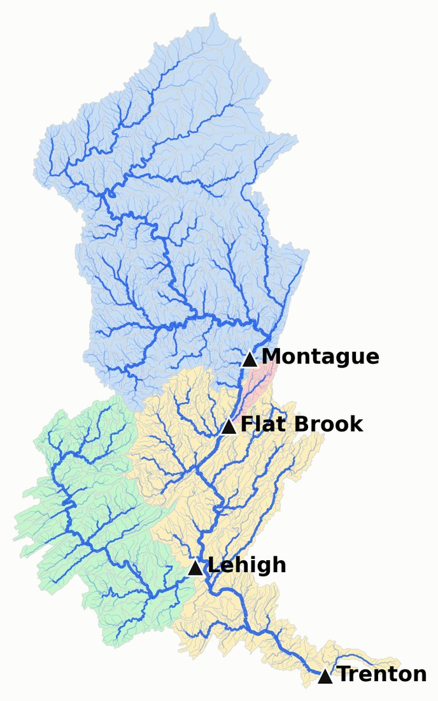

Ongoing research · DOE Genesis Mission
RIVER-AI
Reservoir–Groundwater Interactions for River Flow Variability, Energy, and Resilience with AI
- Funding
- U.S. Department of Energy Genesis Mission award, 2026 — one of 278 projects selected from more than 5,000 proposals
- Team
- Lehigh University (PI: Prof. Hong-Yi Li) with PNNL, ORNL, UT Austin and City College of New York
- My role
- Postdoctoral researcher: river-model coupling, verification and evaluation
The question
In managed basins, river flow depends on more than rain. Reservoir operators decide every day how much water to release, and groundwater either feeds a river or draws water from it, depending on the water table. Large-scale river models usually represent both in simplified ways.
RIVER-AI is building a hybrid AI–physics platform that represents these interactions, to improve predictions of water availability and risk for communities and energy systems. The first application is the upper Delaware River Basin.

What I build
-
A groundwater emulator inside the river model
A partner team trained a PyTorch neural-network emulator of 3D ParFlow subsurface flow. I wrote the river–aquifer exchange law that connects it to MOSART-Urban as a GPU module with storage limits, ran the coupled system on NERSC Perlmutter GPU nodes, and built diagnostics that compare the emulator with ParFlow by time, elevation, and channel versus non-channel cells.
-
LLM reservoir decisions at every time step
Reservoir-operation policies from a partner team, including LLM-based ones, are queried at each daily step, in river-network order, through multi-year simulations. I built that interface and an audit that checks every release decision against the reservoir water balance.
-
Verification before results
Every change is tested before it informs the science: water-budget closure for each exchange scheme, bit-for-bit regression tests against earlier runs, and comparison of simulated streamflow with USGS gauges. Results will be shared once they are published.
Milestones
- July 2026RIVER-AI selected for a DOE Genesis Mission award.
- October 2026Genesis Mission Hands-on Hackathon at Argonne National Laboratory (October 14–16), which drew more than 450 participants from 185 teams. I attended with a colleague for the RIVER-AI team. Event ↗
- November 2026Groundwater-emulator exchange running inside the river model on GPU nodes; LLM reservoir policies coupled into multi-year simulations.
- NextScientific evaluation of the coupled system, and publication.
How I use AI to do the research
Besides putting AI inside the model, I use AI coding agents for the work around it: reading model code, running diagnostics, documenting, and coordinating jobs on supercomputers.
Each agent gets a fixed task, permissions, compute budget and output folder. A separate reviewer agent and then I check the work, and nothing counts until the numbers close. This independent review has already caught a real accounting error, which was then fixed. I prepared a group briefing and a setup video so colleagues can use the same tools.
More